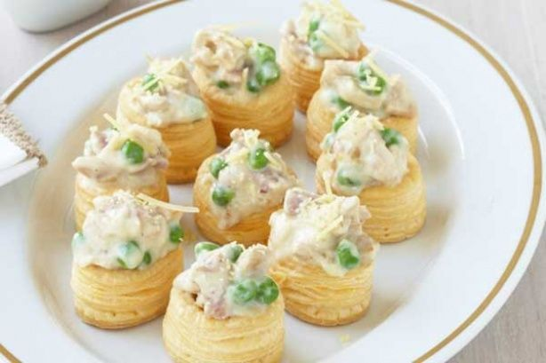

Turkey carbonara vol-au-vents

Description
Remember when it was the height of sophisti-catering to whack frozen pastry circles into the oven then fill them with delights such as coronation chicken, turkey carbonara or prawn mayo?
Ingredients
- 2 x 60g pkt mini vol-au-vent cases
- 425g tub carbonara pasta sauce
- 2 cups cooked turkey meat, chopped
- 1 cup frozen peas
- 1/2 cup parmesan cheese, shredded
Steps:
- Preheat oven to 180C or 160C fan. Place vol-au-vent cases on a baking tray. Bake for 8 mins until light golden.
- Heat carbonara sauce in a medium saucepan on low heat. Add turkey and peas and simmer, stirring occasionally for 5 mins until peas are tender.
- Fill vol-au-vent cases with turkey mixture. Top each with a little parmesan and serve.
Home